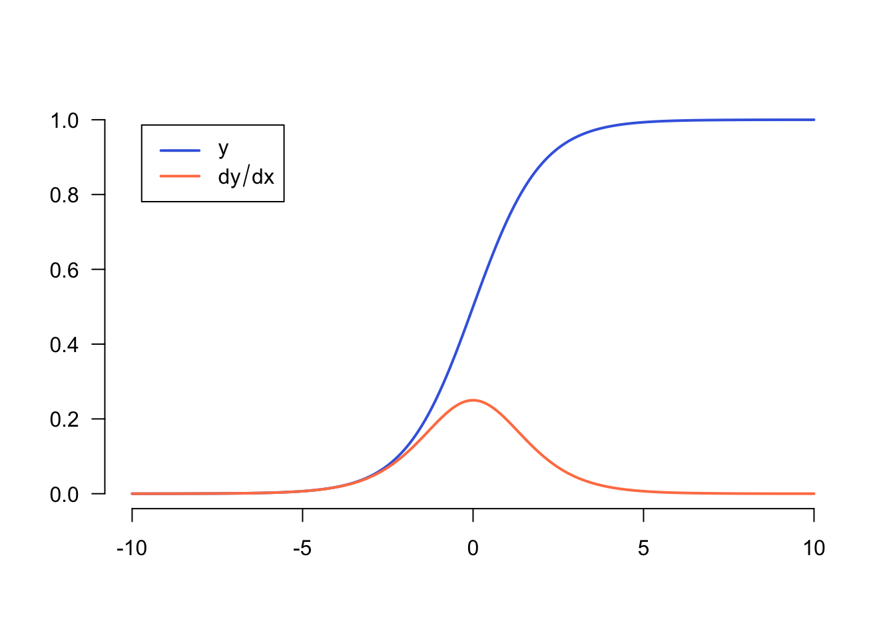

#@title Licensed under the Apache License, Version 2.0 (the "License");
# you may not use this file except in compliance with the License.
# You may obtain a copy of the License at
#
# https://www.apache.org/licenses/LICENSE-2.0
#
# Unless required by applicable law or agreed to in writing, software
# distributed under the License is distributed on an "AS IS" BASIS,
# WITHOUT WARRANTIES OR CONDITIONS OF ANY KIND, either express or implied.
# See the License for the specific language governing permissions and
# limitations under the License.Introduction to gradients and automatic differentiation
Automatic Differentiation and Gradients
Automatic differentiation is useful for implementing machine learning algorithms such as backpropagation for training neural networks.
In this guide, you will explore ways to compute gradients with TensorFlow, especially in eager execution.
Setup
library(tensorflow)
library(keras)Computing gradients
To differentiate automatically, TensorFlow needs to remember what operations happen in what order during the forward pass. Then, during the backward pass, TensorFlow traverses this list of operations in reverse order to compute gradients.
Gradient tapes
TensorFlow provides the tf$GradientTape() API for automatic differentiation; that is, computing the gradient of a computation with respect to some inputs, usually tf$Variables. TensorFlow “records” relevant operations executed inside the context of a tf$GradientTape() onto a “tape”. TensorFlow then uses that tape to compute the gradients of a “recorded” computation using reverse mode differentiation.
Here is a simple example:
x <- tf$Variable(3)Loaded Tensorflow version 2.9.1with(tf$GradientTape() %as% tape, {
y <- x ^ 2
})Once you’ve recorded some operations, use GradientTape$gradient(target, sources) to calculate the gradient of some target (often a loss) relative to some source (often the model’s variables):
# dy = 2x * dx
dy_dx <- tape$gradient(y, x)
dy_dxtf.Tensor(6.0, shape=(), dtype=float32)The above example uses scalars, but tf$GradientTape works as easily on any tensor:
w <- tf$Variable(tf$random$normal(c(3L, 2L)), name = 'w')
b <- tf$Variable(tf$zeros(2L, dtype = tf$float32), name = 'b')
x <- as_tensor(1:3, "float32", shape = c(1, 3))
with(tf$GradientTape(persistent = TRUE) %as% tape, {
y <- tf$matmul(x, w) + b
loss <- mean(y ^ 2)
})To get the gradient of loss with respect to both variables, you can pass both as sources to the gradient method. The tape is flexible about how sources are passed and will accept any nested combination of lists or dictionaries and return the gradient structured the same way (see tf$nest).
c(dl_dw, dl_db) %<-% tape$gradient(loss, c(w, b))The gradient with respect to each source has the shape of the source:
w$shapeTensorShape([3, 2])dl_dw$shapeTensorShape([3, 2])Here is the gradient calculation again, this time passing a named list of variables:
my_vars <- list(w = w,
b = b)
grad <- tape$gradient(loss, my_vars)
grad$btf.Tensor([-3.2715926 -2.462634 ], shape=(2), dtype=float32)Gradients with respect to a model
It’s common to collect tf$Variables into a tf$Module or one of its subclasses (tf$keras$layers$Layer, tf$keras$Model) for checkpointing and exporting.
In most cases, you will want to calculate gradients with respect to a model’s trainable variables. Since all subclasses of tf$Module aggregate their variables in the Module$trainable_variables property, you can calculate these gradients in a few lines of code:
layer <- layer_dense(units = 2, activation = 'relu')
x <- as_tensor(1:3, "float32", shape = c(1, -1))
with(tf$GradientTape() %as% tape, {
# Forward pass
y <- layer(x)
loss <- mean(y ^ 2)
})
# Calculate gradients with respect to every trainable variable
grad <- tape$gradient(loss, layer$trainable_variables)for (pair in zip_lists(layer$trainable_variables, grad)) {
c(var, g) %<-% pair
print(glue::glue('{var$name}, shape: {format(g$shape)}'))
}dense/kernel:0, shape: (3, 2)
dense/bias:0, shape: (2)Controlling what the tape watches
The default behavior is to record all operations after accessing a trainable tf$Variable. The reasons for this are:
- The tape needs to know which operations to record in the forward pass to calculate the gradients in the backwards pass.
- The tape holds references to intermediate outputs, so you don’t want to record unnecessary operations.
- The most common use case involves calculating the gradient of a loss with respect to all a model’s trainable variables.
For example, the following fails to calculate a gradient because the tf$Tensor is not “watched” by default, and the tf$Variable is not trainable:
# A trainable variable
x0 <- tf$Variable(3.0, name = 'x0')
# Not trainable
x1 <- tf$Variable(3.0, name = 'x1', trainable = FALSE)
# Not a Variable: A variable + tensor returns a tensor.
x2 <- tf$Variable(2.0, name = 'x2') + 1.0
# Not a variable
x3 <- as_tensor(3.0, name = 'x3')
with(tf$GradientTape() %as% tape, {
y <- (x0 ^ 2) + (x1 ^ 2) + (x2 ^ 2)
})
grad <- tape$gradient(y, list(x0, x1, x2, x3))
str(grad)List of 4
$ :<tf.Tensor: shape=(), dtype=float32, numpy=6.0>
$ : NULL
$ : NULL
$ : NULLYou can list the variables being watched by the tape using the GradientTape$watched_variables method:
tape$watched_variables()[[1]]
<tf.Variable 'x0:0' shape=() dtype=float32, numpy=3.0>tf$GradientTape provides hooks that give the user control over what is or is not watched.
To record gradients with respect to a tf$Tensor, you need to call GradientTape$watch(x):
x <- as_tensor(3.0)
with(tf$GradientTape() %as% tape, {
tape$watch(x)
y <- x ^ 2
})
# dy = 2x * dx
dy_dx <- tape$gradient(y, x)
as.array(dy_dx)[1] 6Conversely, to disable the default behavior of watching all tf$Variables, set watch_accessed_variables = FALSE when creating the gradient tape. This calculation uses two variables, but only connects the gradient for one of the variables:
x0 <- tf$Variable(0.0)
x1 <- tf$Variable(10.0)
with(tf$GradientTape(watch_accessed_variables = FALSE) %as% tape, {
tape$watch(x1)
y0 <- sin(x0)
y1 <- tf$nn$softplus(x1)
y <- y0 + y1
ys <- sum(y)
})Since GradientTape$watch was not called on x0, no gradient is computed with respect to it:
# dys/dx1 = exp(x1) / (1 + exp(x1)) = sigmoid(x1)
grad <- tape$gradient(ys, list(x0 = x0, x1 = x1))
cat('dy/dx0: ', grad$x0)dy/dx0: cat('dy/dx1: ', as.array(grad$x1))dy/dx1: 0.9999546Intermediate results
You can also request gradients of the output with respect to intermediate values computed inside the tf$GradientTape context.
x <- as_tensor(3.0)
with(tf$GradientTape() %as% tape, {
tape$watch(x)
y <- x * x
z <- y * y
})
# Use the tape to compute the gradient of z with respect to the
# intermediate value y.
# dz_dy = 2 * y and y = x ^ 2 = 9
tape$gradient(z, y) |> as.array()[1] 18By default, the resources held by a GradientTape are released as soon as the GradientTape$gradient method is called. To compute multiple gradients over the same computation, create a gradient tape with persistent = TRUE. This allows multiple calls to the gradient method as resources are released when the tape object is garbage collected. For example:
x <- as_tensor(c(1, 3.0))
with(tf$GradientTape(persistent = TRUE) %as% tape, {
tape$watch(x)
y <- x * x
z <- y * y
})
as.array(tape$gradient(z, x)) # c(4.0, 108.0); (4 * x^3 at x = c(1.0, 3.0)[1] 4 108as.array(tape$gradient(y, x)) # c(2.0, 6.0); (2 * x at x = c(1.0, 3.0)[1] 2 6rm(tape) # Drop the reference to the tapeNotes on performance
There is a tiny overhead associated with doing operations inside a gradient tape context. For most eager execution this will not be a noticeable cost, but you should still use tape context around the areas only where it is required.
Gradient tapes use memory to store intermediate results, including inputs and outputs, for use during the backwards pass.
For efficiency, some ops (like
ReLU) don’t need to keep their intermediate results and they are pruned during the forward pass. However, if you usepersistent = TRUEon your tape, nothing is discarded and your peak memory usage will be higher.
Gradients of non-scalar targets
A gradient is fundamentally an operation on a scalar.
x <- tf$Variable(2.0)
with(tf$GradientTape(persistent = TRUE) %as% tape, {
y0 <- x ^ 2
y1 <- 1 / x
})
as.array(tape$gradient(y0, x))[1] 4as.array(tape$gradient(y1, x))[1] -0.25Thus, if you ask for the gradient of multiple targets, the result for each source is:
- The gradient of the sum of the targets, or equivalently
- The sum of the gradients of each target.
x <- tf$Variable(2.0)
with(tf$GradientTape() %as% tape, {
y0 <- x^2
y1 <- 1 / x
})
as.array(tape$gradient(list(y0 = y0, y1 = y1), x))[1] 3.75Similarly, if the target(s) are not scalar the gradient of the sum is calculated:
x <- tf$Variable(2)
with(tf$GradientTape() %as% tape, {
y <- x * c(3, 4)
})
as.array(tape$gradient(y, x))[1] 7This makes it simple to take the gradient of the sum of a collection of losses, or the gradient of the sum of an element-wise loss calculation.
If you need a separate gradient for each item, refer to Jacobians.
In some cases you can skip the Jacobian. For an element-wise calculation, the gradient of the sum gives the derivative of each element with respect to its input-element, since each element is independent:
x <- tf$linspace(-10.0, 10.0, as.integer(200+1))
with(tf$GradientTape() %as% tape, {
tape$watch(x)
y <- tf$nn$sigmoid(x)
})
dy_dx <- tape$gradient(y, x)for(var in alist(x, y, dy_dx))
eval(bquote(.(var) <- as.array(.(var))))
plot(NULL, xlim = range(x), ylim = range(y), ann=F, frame.plot = F)
lines(x, y, col = "royalblue", lwd = 2)
lines(x, dy_dx, col = "coral", lwd=2)
legend("topleft", inset = .05,
expression(y, dy/dx),
col = c("royalblue", "coral"), lwd = 2)
Control flow
Because a gradient tape records operations as they are executed, Python control flow is naturally handled (for example, if and while statements).
Here a different variable is used on each branch of an if. The gradient only connects to the variable that was used:
x <- as_tensor(1.0)
v0 <- tf$Variable(2.0)
v1 <- tf$Variable(2.0)
with(tf$GradientTape(persistent = TRUE) %as% tape, {
tape$watch(x)
if (as.logical(x > 0.0))
result <- v0
else
result <- v1 ^ 2
})
c(dv0, dv1) %<-% tape$gradient(result, list(v0, v1))
dv0tf.Tensor(1.0, shape=(), dtype=float32)dv1NULLJust remember that the control statements themselves are not differentiable, so they are invisible to gradient-based optimizers.
Depending on the value of x in the above example, the tape either records result = v0 or result = v1 ^ 2. The gradient with respect to x is always NULL.
(dx <- tape$gradient(result, x))NULLGetting a gradient of NULL
When a target is not connected to a source you will get a gradient of NULL.
x <- tf$Variable(2)
y <- tf$Variable(3)
with(tf$GradientTape() %as% tape, {
z <- y * y
})
tape$gradient(z, x)Here z is obviously not connected to x, but there are several less-obvious ways that a gradient can be disconnected.
1. Replaced a variable with a tensor
In the section on “controlling what the tape watches” you saw that the tape will automatically watch a tf$Variable but not a tf$Tensor.
One common error is to inadvertently replace a tf$Variable with a tf$Tensor, instead of using Variable$assign to update the tf$Variable. Here is an example:
x <- tf$Variable(2.0)
for (epoch in seq(2)) {
with(tf$GradientTape() %as% tape,
{ y <- x+1 })
cat(x$`__class__`$`__name__`, ": ")
print(tape$gradient(y, x))
x <- x + 1 # This should be `x$assign_add(1)`
}ResourceVariable : tf.Tensor(1.0, shape=(), dtype=float32)
EagerTensor : NULL2. Did calculations outside of TensorFlow
The tape can’t record the gradient path if the calculation exits TensorFlow. For example:
np <- reticulate::import("numpy", convert = FALSE)
x <- tf$Variable(as_tensor(1:4, dtype=tf$float32, shape = c(2, 2)))
with(tf$GradientTape() %as% tape, {
x2 <- x ^ 2
# This step is calculated with NumPy
y <- np$mean(x2, axis = 0L)
# Like most tf ops, reduce_mean will cast the NumPy array to a constant tensor
# using `tf$convert_to_tensor`.
y <- tf$reduce_mean(y, axis = 0L)
})
print(tape$gradient(y, x))NULL3. Took gradients through an integer or string
Integers and strings are not differentiable. If a calculation path uses these data types there will be no gradient.
Nobody expects strings to be differentiable, but it’s easy to accidentally create an int constant or variable if you don’t specify the dtype.
x <- as_tensor(10L)
with(tf$GradientTape() %as% g, {
g$watch(x)
y <- x * x
})
g$gradient(y, x)WARNING:tensorflow:The dtype of the watched tensor must be floating (e.g. tf.float32), got tf.int32
WARNING:tensorflow:The dtype of the target tensor must be floating (e.g. tf.float32) when calling GradientTape.gradient, got tf.int32
WARNING:tensorflow:The dtype of the source tensor must be floating (e.g. tf.float32) when calling GradientTape.gradient, got tf.int32TensorFlow doesn’t automatically cast between types, so, in practice, you’ll often get a type error instead of a missing gradient.
4. Took gradients through a stateful object
State stops gradients. When you read from a stateful object, the tape can only observe the current state, not the history that lead to it.
A tf$Tensor is immutable. You can’t change a tensor once it’s created. It has a value, but no state. All the operations discussed so far are also stateless: the output of a tf$matmul only depends on its inputs.
A tf$Variable has internal state—its value. When you use the variable, the state is read. It’s normal to calculate a gradient with respect to a variable, but the variable’s state blocks gradient calculations from going farther back. For example:
x0 <- tf$Variable(3.0)
x1 <- tf$Variable(0.0)
with(tf$GradientTape() %as% tape, {
# Update x1 <- x1 + x0.
x1$assign_add(x0)
# The tape starts recording from x1.
y <- x1^2 # y = (x1 + x0)^2
})
# This doesn't work.
print(tape$gradient(y, x0)) #dy/dx0 = 2*(x1 + x0)NULLSimilarly, tf$data$Dataset iterators and tf$queues are stateful, and will stop all gradients on tensors that pass through them.
No gradient registered
Some tf$Operations are registered as being non-differentiable* and will return NULL. Others have no gradient registered**.
The tf$raw_ops page shows which low-level ops have gradients registered.
If you attempt to take a gradient through a float op that has no gradient registered the tape will throw an error instead of silently returning NULL. This way you know something has gone wrong.
For example, the tf$image$adjust_contrast function wraps raw_ops$AdjustContrastv2, which could have a gradient but the gradient is not implemented:
image <- tf$Variable(array(c(0.5, 0, 0), c(1,1,1)))
delta <- tf$Variable(0.1)
with(tf$GradientTape() %as% tape, {
new_image <- tf$image$adjust_contrast(image, delta)
})
try(print(tape$gradient(new_image, list(image, delta))))Error in py_call_impl(callable, dots$args, dots$keywords) :
LookupError: gradient registry has no entry for: AdjustContrastv2If you need to differentiate through this op, you’ll either need to implement the gradient and register it (using tf$RegisterGradient) or re-implement the function using other ops.
Zeros instead of NULL
In some cases it would be convenient to get 0 instead of NULL for unconnected gradients. You can decide what to return when you have unconnected gradients using the unconnected_gradients argument:
x <- tf$Variable(c(2, 2))
y <- tf$Variable(3)
with(tf$GradientTape() %as% tape, {
z <- y^2
})
tape$gradient(z, x, unconnected_gradients = tf$UnconnectedGradients$ZERO)tf.Tensor([0. 0.], shape=(2), dtype=float32)Environment Details
Tensorflow Version
tensorflow::tf_version()[1] '2.9'
R Environment Information
Sys.info() sysname
"Darwin"
release
"21.4.0"
version
"Darwin Kernel Version 21.4.0: Mon Feb 21 20:34:37 PST 2022; root:xnu-8020.101.4~2/RELEASE_X86_64"
nodename
"Daniels-MacBook-Pro.local"
machine
"x86_64"
login
"root"
user
"dfalbel"
effective_user
"dfalbel"